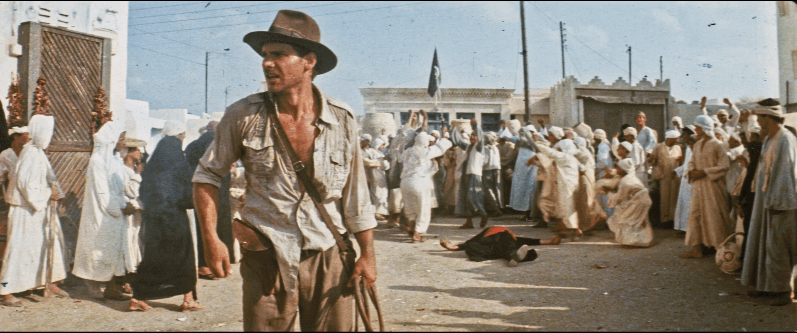
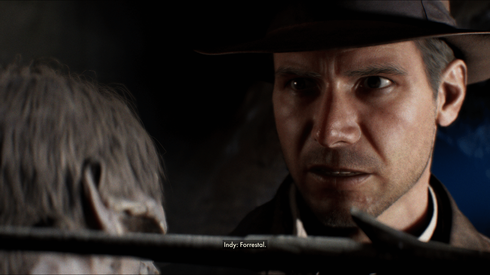
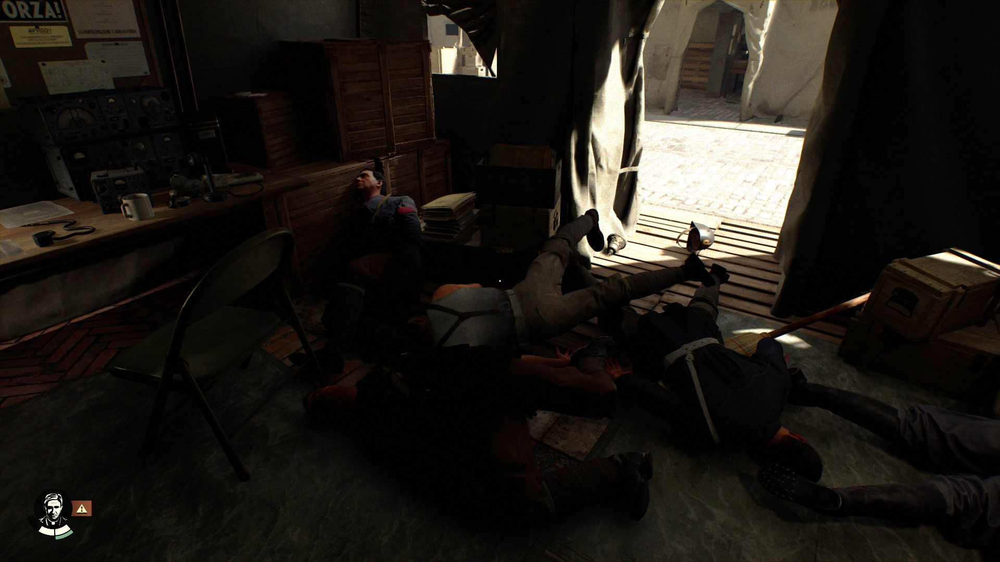
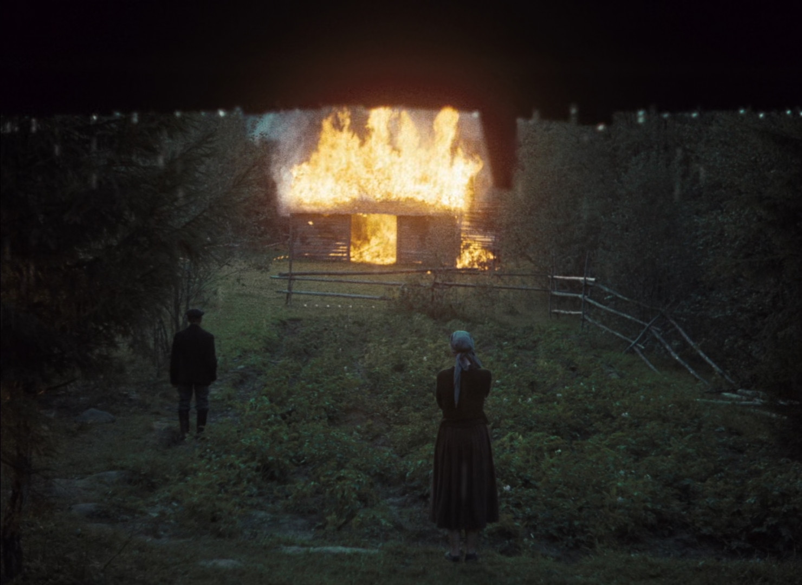

This last year I’ve pretty much only played games that are from the PS2 era at the latest or indie games, so the triple-A space has been something I’ve observed with increasing horror, gigantic mausoleum machines of ray-traced void, and in the case of the Astro-Bot, a platformer disguising a marketing engine disguising a tombstone for the only cool things Sony ever let on their consoles. I don’t have anything that would run these games even if I wanted to, except oh wait, I don’t but my girlfriend does, a monster desktop PC that I forget exists because she mostly uses it to play Nuclear Throne (my fault) and Vampire the Masquerade: Bloodlines (also my fault). I made a list of the very few games from this year I wanted to play, and skipped over the certainly more interesting Slitterhead and Kunitsu-Gami to play the 120GB franchise behemoth Indiana Jones and The Great Circle. This is because 1) for all their flaws, I liked Machine Games takes on Wolfenstein, 2) for all their flaws, I still like Indiana Jones. I am one of three people who saw Dial of Destiny in the cinema and then immediately retreated to rewatching Raiders again, and then again again recently in another harddrive demolishing 35mm scan:

Little did I know that The Great Circle would begin with an absurdly wanky recreation of the Raiders cold open, but fanservice is fine when I’m being serviced, and having spent the year bathing in hazy phosphors I was genuinely floored by the visual fidelity. This sense of awe would continue into its first luxurious hub, the Vatican, in which it really felt like Machine Games had broken free of triple-A expectation. No endless markers poking me where to go, a commitment to stealth and archaeology puzzles over combat (that the revolver has so little ammunition and is impractically loud remains very cool) and light immersive sim experimentation was definitely not what I was expecting. So I spent ages in the Vatican poring over every detail, discovering mysteries organically from letters and overheard conversations, poking and pulling at this incredible mechanical diorama.

It was, of course, an illusion. Or rather, a complex series of overlapping illusions. There were markers, you just had to look down at your map. The stealth is extraordinarily simple and easily broken by knocking a person out and then knocking out anyone investigating. The puzzles are neat, but if there’s an NPC with you they’ll have barked a hint before you have a chance to really ruminate. Aside from the amusing meta-game of finding the funniest thing to brain a fascist with (a mandolin, in my experience) it’s far less of an immersive sim than even the first Bioshock was. Even the magic of the Vatican itself falls away, with large chunks gated behind main story progression, leading to mysteries that rather unorganically pause until I hang around with the story some more. And the story is fine! It’s very faithfully Indiana Jones, albeit the 21st century conception of Indy that is endlessly pining after Marion instead of being a weird mean asshole. It’s also an Indiana Jones plot stretched by hours and hours, with the Vatican consisting of the first act, before “the chase is on!” in the second locale.

And I understand. What can you do, videogames are illusions, electric shadows of horrendous complexity. Of course the magic will die. But playing all these far more focused older and independent games really draws into focus the spinning plates of triple-A , so focused on selling an image of themselves that they break apart on closer examination. Resident Evil builds a convincing world out of pre-rendered backgrounds, fixed camera angles and meticulously balanced resources. The Great Circle is a technical powerhouse, full of side activities that have their own hours of cutscenes attached, a product of intense research and effort, but it’s simply too much, a mess of so many things that make it feel less than the sum of its parts. By the time I discovered that you could simply buy books in game to add a million markers for all the points of interest, it ceased being a World and became merely a Game. I’ll finish it, because there’s still fun to be had, fascists to be punched, but it’s ceased to hold my interest or imagination.

A little while ago, I watched Tarkovsky’s Mirror first thing in the morning, and it was so beautiful it ruined my day. It felt like the world that supported such an idiosyncratic work no longer exists. I feel similarly about videogames- there’s no reason that big expensive games can’t be interesting, except for capitalism. It’s the reason the Stalker videogames are violent power fantasies in a way not supported by Roadside Picnic or Tarkovsky’s adaptation. Of course I realise it’s absurd to expect more from an Indiana Jones game. But for a few hours it managed to convince me.
Until it all disappeared into electric shadows.